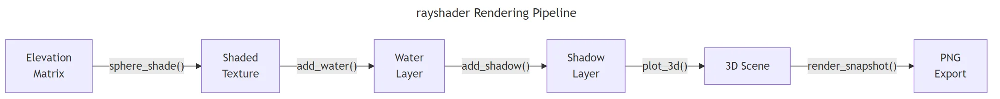

3D Maps in R: rayshader Package for Terrain Visualization
rayshader is an R package that turns elevation matrices into photorealistic 2D and 3D terrain maps using raytracing and hillshading algorithms. Feed it a numeric matrix of heights, apply shading and shadow layers, and call plot_3d() to produce an interactive 3D scene you can rotate, zoom, and export as a PNG or movie.
What can rayshader produce from a single elevation matrix?
R's built-in volcano dataset is an 87-by-61 matrix of elevation values from Auckland's Maunga Whau crater. That is everything rayshader needs — a plain numeric matrix where each cell is a height in metres. Let's turn it into a shaded terrain and then a full 3D scene in under ten lines.
# Install once: install.packages("rayshader")
library(rayshader)
# 2D hillshade — sphere_shade generates a colour-shaded texture
volcano |>
sphere_shade(texture = "desert") |>
plot_map()
#> [A 2D hillshade image of Maunga Whau crater. Warm desert tones shade
#> the slopes — bright tan on sunlit faces, dark brown in shadow. The
#> crater rim stands out clearly against the lower slopes.]sphere_shade() simulates sunlight hitting the surface from a configurable angle and maps the result onto a colour palette. The "desert" texture gives warm earth tones, but rayshader ships with seven built-in palettes you can swap in with a single argument change.
Now let's push this into three dimensions.
# 3D scene — plot_3d adds depth to the shaded texture
volcano |>
sphere_shade(texture = "desert") |>
plot_3d(volcano, zscale = 4, windowsize = c(800, 600))
render_snapshot()
#> [An interactive 3D rendering of the volcano. The crater depression is
#> clearly visible, with steep inner walls and a flatter summit rim.
#> The terrain tilts towards the viewer at roughly 45 degrees.]plot_3d() takes the 2D shaded texture and drapes it over the elevation matrix to build a 3D surface. The zscale parameter controls vertical exaggeration — lower values make peaks taller relative to the base. The rgl window that opens is fully interactive: click and drag to rotate, scroll to zoom.
Let's look at what the raw data behind this looks like.
# The volcano matrix: 87 rows, 61 columns of elevation values
dim(volcano)
#> [1] 87 61
volcano[1:5, 1:5]
#> [,1] [,2] [,3] [,4] [,5]
#> [1,] 100 100 101 101 101
#> [2,] 101 101 102 102 102
#> [3,] 102 102 103 103 103
#> [4,] 102 103 103 104 104
#> [5,] 103 103 104 104 104Each cell holds a single number — the elevation at that grid point. Row and column positions define the x and y coordinates; the cell value is the z (height). Any numeric matrix in this format works with rayshader, whether it comes from a raster file, a satellite DEM, or values you generate yourself.
Try it: Change the texture from "desert" to "imhof1" in the sphere_shade() call and render the 2D map. How do the colours differ?
# Try it: swap the texture palette
volcano |>
sphere_shade(texture = "______") |>
plot_map()Click to reveal solution
volcano |>
sphere_shade(texture = "imhof1") |>
plot_map()
#> [A 2D hillshade with muted green-grey tones instead of warm desert
#> colours. imhof1 mimics the classic cartographic palette designed by
#> Swiss cartographer Eduard Imhof — ideal for alpine terrain maps.]Explanation: Each texture name maps to a 5-colour gradient. "imhof1" uses earthy greens and greys inspired by traditional Swiss cartography, while "desert" uses warm tans and browns.
How does sphere_shade() turn heights into colours?
Sphere shading works by simulating sunlight striking a smooth surface. For each cell in the elevation matrix, rayshader calculates the angle between the surface normal (the direction the slope faces) and the light source. Cells facing the sun get bright colours; cells angled away get dark ones. The result is a colour matrix — same dimensions as the input — that you can display with plot_map() or drape over a 3D surface.
rayshader ships with seven built-in texture palettes. Each palette is a gradient of five anchor colours that blend across the light-to-shadow range.
# Compare all seven built-in textures
textures <- c("desert", "imhof1", "imhof2", "imhof3",
"imhof4", "unicorn", "bw")
par(mfrow = c(2, 4), mar = c(1, 1, 2, 1))
for (tex in textures) {
volcano |>
sphere_shade(texture = tex) |>
plot_map()
title(tex)
}
#> [Seven side-by-side 2D hillshades of volcano, each with a distinct
#> colour scheme: desert (warm tan), imhof1-4 (various cartographic
#> earth tones), unicorn (pastel rainbow), bw (greyscale).]The "desert" and "imhof" palettes suit geographic maps. "unicorn" is playful — good for presentations. "bw" strips colour entirely and shows pure light-shadow contrast, which is useful when you plan to overlay your own colours later.
When you want direct elevation-to-colour mapping (darker at sea level, brighter at peaks) instead of light-angle shading, use height_shade().
# height_shade maps elevation values directly to a colour gradient
hs <- volcano |>
height_shade(texture = grDevices::colorRampPalette(
c("darkgreen", "yellow", "brown", "white")
)(256))
plot_map(hs)
#> [Volcano coloured by altitude: dark green at the base, transitioning
#> through yellow and brown to white at the crater rim. No shadow
#> effects — pure elevation mapping.]height_shade() ignores sun angle entirely. It assigns colours based on the cell's value relative to the matrix range. This is the function to use when you want a classic "green lowlands, brown highlands, white peaks" hypsometric map.
For full creative control, create_texture() builds a custom 5-colour palette from any colours you choose.
# Build a custom palette: ocean floor to snow peaks
custom_tex <- create_texture(
"#1a5276", # deep blue (low)
"#2e86c1", # medium blue
"#27ae60", # green (mid)
"#f39c12", # orange (high)
"#ecf0f1" # near-white (peaks)
)
volcano |>
sphere_shade(texture = custom_tex) |>
plot_map()
#> [Volcano shaded with the custom palette: blue lowlands, green
#> mid-slopes, orange upper ridges, and near-white crater rim.
#> Sunlight/shadow still modulates the intensity of each colour.]The five colours you pass to create_texture() map to five light-intensity levels, not five elevation bands. Colour 1 appears on the darkest (most shadowed) slopes and colour 5 on the brightest (most sunlit). This means your palette interacts with the sun angle: rotating the light source changes which slopes get which colours.
Try it: Create a custom texture using five shades of blue — from deep navy to pale sky blue — to simulate an ocean floor. Apply it to the volcano matrix with sphere_shade().
# Try it: ocean floor palette
ex_ocean <- create_texture(
"______", # darkest blue
"______",
"______",
"______",
"______" # lightest blue
)
volcano |>
sphere_shade(texture = ex_ocean) |>
plot_map()Click to reveal solution
ex_ocean <- create_texture(
"#0b1354", # deep navy
"#1a3c6e", # dark blue
"#2471a3", # medium blue
"#5dade2", # light blue
"#d6eaf8" # pale sky blue
)
volcano |>
sphere_shade(texture = ex_ocean) |>
plot_map()
#> [Volcano rendered entirely in blue tones, resembling an underwater
#> terrain scan. Shadowed slopes appear in deep navy, sunlit faces
#> glow in pale sky blue.]Explanation: create_texture() takes exactly five colour values. They map to shadow-to-light intensity, so the deepest blue appears on the most shadowed slopes.
How do you add water, shadows, and overlays?
The base texture from sphere_shade() is just the starting layer. rayshader builds photorealistic maps by stacking additional layers on top: water bodies, directional sun shadows, and soft ambient shadows. Each layer is a separate function, and you compose them with the pipe operator.
First, detect_water() identifies flat, low-lying regions using a flood-fill algorithm. It returns a logical matrix — TRUE where water is detected, FALSE elsewhere.
# Detect and add water to the volcano map
water_map <- detect_water(volcano)
volcano |>
sphere_shade(texture = "desert") |>
add_water(water_map, color = "desert") |>
plot_map()
#> [The volcano hillshade now shows blue-tinted water filling the lowest
#> areas around the base. The crater and ridges remain in desert tones.
#> Water colour matches the "desert" palette's blue variant.]detect_water() works best on terrains with clear elevation differences between land and water. For volcano, it catches the low-lying edges. The color argument accepts the same palette names as sphere_shade(), keeping the visual style consistent.
Next, add shadows. ray_shade() computes hard directional shadows based on sun position — the kind of shadows you see on a sunny day. ambient_shade() computes soft ambient-occlusion shadows — the subtle darkening in crevices and valleys even when no direct sunlight is blocked.
# Compute both shadow types
ray_shadow <- ray_shade(volcano, zscale = 4, sunaltitude = 45)
amb_shadow <- ambient_shade(volcano, zscale = 4)
# Inspect dimensions — same as the elevation matrix
dim(ray_shadow)
#> [1] 87 61Each shadow function returns a matrix of the same dimensions as the input, with values from 0 (full shadow) to 1 (full light). You composite them onto the texture with add_shadow().
# Full layered pipeline: texture + water + shadows
volcano |>
sphere_shade(texture = "desert") |>
add_water(water_map, color = "desert") |>
add_shadow(ray_shadow, max_darkness = 0.5) |>
add_shadow(amb_shadow, max_darkness = 0.3) |>
plot_map()
#> [A richly shaded 2D map. The desert-toned terrain now shows crisp
#> directional shadows on the north-facing slopes and softer darkening
#> inside the crater. Water regions appear at the base. The overall
#> effect is noticeably more three-dimensional than the base texture.]
Figure 1: The rayshader rendering pipeline — elevation data flows through shading, water detection, shadow layers, and into a 3D scene or image export.
The max_darkness parameter in add_shadow() sets the darkest value the shadow can produce. A value of 0.5 means shadows never go below 50% brightness — useful for preventing completely black areas. Lower values create more dramatic contrast; higher values create softer, more subtle shading.
Try it: Change the sun altitude in ray_shade() from the default (45) to 15 — a low sun near the horizon — and compare how the shadow intensity changes.
# Try it: low sun angle shadows
ex_shadow <- ray_shade(volcano, zscale = 4, sunaltitude = ______)
volcano |>
sphere_shade(texture = "desert") |>
add_shadow(ex_shadow, max_darkness = 0.5) |>
plot_map()Click to reveal solution
ex_shadow <- ray_shade(volcano, zscale = 4, sunaltitude = 15)
volcano |>
sphere_shade(texture = "desert") |>
add_shadow(ex_shadow, max_darkness = 0.5) |>
plot_map()
#> [Much longer, more dramatic shadows stretch across the terrain.
#> The low sun angle (15 degrees above the horizon) casts shadows
#> from even small ridges, revealing micro-terrain detail that was
#> invisible at sunaltitude = 45.]Explanation: Lower sun altitudes produce longer shadows because rays hit the terrain at a shallow angle. This is the "golden hour" effect — great for revealing subtle elevation changes.
How do you control the 3D camera and scene?
plot_3d() is where the shaded texture becomes an interactive 3D surface. Four camera parameters control what you see: theta (horizontal rotation), phi (vertical tilt), zoom, and fov (field of view). Understanding these saves you from endlessly tweaking values.
Think of the camera on a tripod aimed at the centre of the map:
- theta spins the turntable that the map sits on. 0 = north-facing, 90 = east-facing, 180 = south-facing.
- phi tilts the camera from ground level (0) to directly overhead (90). A phi of 45 gives a classic three-quarter view.
- zoom moves the camera closer (values > 1) or farther away (values < 1).
- fov controls the lens — 0 is orthographic (no perspective distortion), 70+ is wide-angle with strong perspective.
# Default 3D view with explicit camera settings
volcano |>
sphere_shade(texture = "desert") |>
add_shadow(ray_shade(volcano, zscale = 4), 0.5) |>
plot_3d(volcano, zscale = 4,
theta = 45, phi = 45, zoom = 0.75,
fov = 0, windowsize = c(800, 600))
render_snapshot()
#> [The volcano rendered in 3D at a 45-degree angle from the northeast,
#> tilted halfway between eye-level and overhead. Orthographic projection
#> (fov=0) keeps the far side the same scale as the near side.]Let's see how different camera angles change the story the map tells.
# Four distinct viewpoints
par(mfrow = c(2, 2))
# Bird's eye — great for showing spatial patterns
volcano |>
sphere_shade() |>
plot_3d(volcano, zscale = 4, theta = 0, phi = 89, zoom = 0.7)
render_snapshot(title_text = "Bird's Eye (phi=89)")
# Eye level — dramatic, emphasises height
volcano |>
sphere_shade() |>
plot_3d(volcano, zscale = 4, theta = 135, phi = 15, zoom = 0.8)
render_snapshot(title_text = "Eye Level (phi=15)")
# Southeast view — shows the crater opening
volcano |>
sphere_shade() |>
plot_3d(volcano, zscale = 4, theta = 135, phi = 45, zoom = 0.75)
render_snapshot(title_text = "Southeast (theta=135)")
# Wide-angle lens — adds cinematic perspective
volcano |>
sphere_shade() |>
plot_3d(volcano, zscale = 4, theta = 45, phi = 30, zoom = 0.6, fov = 70)
render_snapshot(title_text = "Wide Angle (fov=70)")
#> [Four panels showing the same volcano from radically different angles.
#> Bird's eye looks like a 2D map with subtle depth cues. Eye level
#> makes the crater rim tower above the viewer. Wide-angle adds dramatic
#> barrel-like perspective distortion.]The zscale parameter deserves special attention. It controls vertical exaggeration — the ratio between horizontal and vertical units. A smaller zscale makes peaks taller relative to the base.
# zscale comparison: realistic vs exaggerated
volcano |>
sphere_shade(texture = "desert") |>
plot_3d(volcano, zscale = 8, theta = 45, phi = 30)
render_snapshot(title_text = "zscale = 8 (flatter)")
volcano |>
sphere_shade(texture = "desert") |>
plot_3d(volcano, zscale = 2, theta = 45, phi = 30)
render_snapshot(title_text = "zscale = 2 (exaggerated)")
#> [Two side-by-side views. zscale=8 produces a gently rolling surface
#> where the crater is a shallow dip. zscale=2 produces dramatic
#> towering peaks with a deep, canyon-like crater.]Try it: Create a bird's-eye view (phi=89, theta=0) of the volcano with zscale=0.7 (very exaggerated) and save it with render_snapshot("birds_eye.png").
# Try it: extreme bird's eye
volcano |>
sphere_shade(texture = "desert") |>
plot_3d(volcano, zscale = ______, theta = ______, phi = ______)
render_snapshot("birds_eye.png")Click to reveal solution
volcano |>
sphere_shade(texture = "desert") |>
plot_3d(volcano, zscale = 0.7, theta = 0, phi = 89,
zoom = 0.65, windowsize = c(800, 600))
render_snapshot("birds_eye.png")
#> [A top-down view with extreme vertical exaggeration. The crater
#> appears as a deep dark hole, and every ridge casts long shadows.
#> The file birds_eye.png is saved to the working directory.]Explanation: phi=89 points the camera almost straight down, theta=0 faces north, and zscale=0.7 exaggerates the terrain so the crater looks dramatically deep even from above.
How do you export high-quality renders and animations?
The interactive rgl window is great for exploration, but you need static images and videos for reports, papers, and websites. rayshader offers three export functions at different quality levels.
render_snapshot() captures the current rgl view as a PNG. It's fast — essentially a screenshot of the 3D window.
# Basic snapshot export
volcano |>
sphere_shade(texture = "desert") |>
add_shadow(ray_shade(volcano, zscale = 4), 0.5) |>
add_shadow(ambient_shade(volcano), 0.3) |>
plot_3d(volcano, zscale = 4, theta = 135, phi = 35, zoom = 0.75)
render_snapshot("volcano_basic.png", clear = TRUE)
#> [Saves volcano_basic.png to the working directory. The image matches
#> exactly what the rgl window displayed. clear=TRUE closes the rgl
#> window after capturing.]For publication or presentation quality, render_highquality() uses the rayrender package to raytrace the scene with physically realistic lighting. The result is dramatically better — soft shadows, ambient lighting, and anti-aliased edges — but it takes longer to compute.
# High-quality pathtraced render
volcano |>
sphere_shade(texture = "desert") |>
add_shadow(ray_shade(volcano, zscale = 4), 0.5) |>
plot_3d(volcano, zscale = 4, theta = 135, phi = 35, zoom = 0.75)
render_highquality(
filename = "volcano_hq.png",
samples = 400,
lightdirection = c(225, 225),
lightaltitude = c(30, 60),
lightintensity = c(400, 200),
width = 1200,
height = 900,
clear = TRUE
)
#> [Renders a publication-quality image with soft shadows, two light
#> sources (one strong from the southwest at 30 degrees altitude, one
#> fill light from the same direction at 60 degrees). Rendering takes
#> 30-90 seconds depending on hardware.]The samples parameter controls quality — more samples mean less noise in the shadows but longer render times. Use 200 for drafts, 400-600 for final output, and 800+ for print-resolution work.
For animated output, render_movie() orbits the camera around the scene and saves the result as an MP4 or GIF.
# Create a 360-degree orbit animation
volcano |>
sphere_shade(texture = "desert") |>
add_shadow(ray_shade(volcano, zscale = 4), 0.5) |>
plot_3d(volcano, zscale = 4, phi = 35, zoom = 0.75)
render_movie(
filename = "volcano_orbit.mp4",
type = "orbit",
frames = 360,
fps = 30,
phi = 35,
zoom = 0.75
)
#> [Creates a 12-second MP4video (360 frames / 30 fps) showing the
#> terrain rotating 360 degrees. The camera stays at phi=35 while
#> theta cycles from 0 to 360.]render_movie() also supports type = "oscillate" for a rocking back-and-forth motion, which works well for short social-media clips.
Try it: Create a high-quality render with the light coming from the northwest (lightdirection = 315) and 400 samples. Set the camera at theta = 90, phi = 40.
# Try it: northwest-lit high-quality render
volcano |>
sphere_shade(texture = "desert") |>
add_shadow(ray_shade(volcano, zscale = 4), 0.5) |>
plot_3d(volcano, zscale = 4, theta = 90, phi = 40)
render_highquality(
filename = "volcano_nw.png",
samples = ______,
lightdirection = ______,
lightaltitude = 45,
width = 1200, height = 900,
clear = TRUE
)Click to reveal solution
volcano |>
sphere_shade(texture = "desert") |>
add_shadow(ray_shade(volcano, zscale = 4), 0.5) |>
plot_3d(volcano, zscale = 4, theta = 90, phi = 40, zoom = 0.75)
render_highquality(
filename = "volcano_nw.png",
samples = 400,
lightdirection = 315,
lightaltitude = 45,
width = 1200, height = 900,
clear = TRUE
)
#> [A pathtraced render with light from the northwest (315 degrees).
#> The southeast-facing slopes catch the most light, while the
#> northwest slopes fall into soft shadow. Clean anti-aliased edges
#> and gentle shadow gradients throughout.]Explanation: lightdirection = 315 places the sun in the northwest. Combined with phi = 40 (a slightly elevated camera angle), this highlights the terrain's southeast slopes.
Practice Exercises
Exercise 1: Full-layer terrain with custom palette
Load the volcano matrix, create a custom 5-colour earth-tone texture with create_texture() (greens at the low end, browns in the middle, cream at the peaks). Add water using detect_water(), apply both ray_shade() and ambient_shade() shadows, and render a 3D view from theta = 135, phi = 35, zscale = 0.6. Save the result as a PNG.
# Exercise 1: Custom earth-tone terrain
# Hint: create_texture() takes 5 colours from shadow to highlight
# Then chain: sphere_shade |> add_water |> add_shadow |> add_shadow |> plot_3d
# Write your code below:
Click to reveal solution
my_tex <- create_texture("#2d5016", "#5a8a2f", "#c4a35a",
"#d4a373", "#fefae0")
my_water <- detect_water(volcano)
my_ray <- ray_shade(volcano, zscale = 0.6)
my_amb <- ambient_shade(volcano, zscale = 0.6)
volcano |>
sphere_shade(texture = my_tex) |>
add_water(my_water, color = "desert") |>
add_shadow(my_ray, max_darkness = 0.4) |>
add_shadow(my_amb, max_darkness = 0.3) |>
plot_3d(volcano, zscale = 0.6, theta = 135, phi = 35,
zoom = 0.75, windowsize = c(800, 600))
render_snapshot("exercise1_terrain.png", clear = TRUE)
#> [A richly coloured 3D terrain: green lowlands, brown ridges, cream
#> peaks. Water fills the low areas. Directional and ambient shadows
#> add depth. Saved as exercise1_terrain.png.]Explanation: create_texture() builds a 5-colour palette from shadow to highlight. The pipeline stacks water, then directional shadow, then ambient shadow before rendering in 3D.
Exercise 2: Synthetic mountain range
Generate a 100-by-100 elevation matrix using R's outer() function with sine and cosine to create a wave-like terrain. Apply sphere_shade() with the "imhof1" texture, add ambient shadows, and render a 3D scene with dramatic vertical exaggeration (zscale = 0.3). Export a high-quality render with 300 samples.
# Exercise 2: Generate synthetic terrain
# Hint: outer(1:100, 1:100, function(x, y) ...) creates a matrix
# Scale the result so values range from 0 to ~200
# Write your code below:
Click to reveal solution
set.seed(101)
my_matrix <- outer(1:100, 1:100, function(x, y) {
100 * sin(x / 10) * cos(y / 10) + 50 * sin(x / 5) + rnorm(1, 0, 5)
})
my_matrix <- my_matrix - min(my_matrix) # shift to start at 0
my_matrix |>
sphere_shade(texture = "imhof1") |>
add_shadow(ambient_shade(my_matrix, zscale = 0.3), 0.3) |>
plot_3d(my_matrix, zscale = 0.3, theta = 45, phi = 35,
zoom = 0.7, windowsize = c(800, 600))
render_highquality(
filename = "exercise2_mountains.png",
samples = 300,
width = 1200, height = 900,
clear = TRUE
)
#> [A synthetic mountain range with repeating sine-wave ridges and
#> valleys. The imhof1 palette gives a classic cartographic look.
#> zscale=0.3 produces dramatic, towering peaks.]Explanation: outer() generates a matrix by applying a function to every (x, y) combination. Layering sin() and cos() at different frequencies creates realistic-looking ridge-and-valley terrain. The rnorm() noise adds natural irregularity.
Exercise 3: Orbit animation
Using the volcano dataset with a full layer stack (sphere_shade + water + both shadow types), create a render_movie() animation that orbits 360 degrees around the terrain. Start at phi = 30 and produce a 12-second movie at 30 fps.
# Exercise 3: 360-degree orbit movie
# Hint: frames = fps * duration_seconds
# type = "orbit" rotates theta from 0 to 360
# Write your code below:
Click to reveal solution
water_ex3 <- detect_water(volcano)
volcano |>
sphere_shade(texture = "desert") |>
add_water(water_ex3, color = "desert") |>
add_shadow(ray_shade(volcano, zscale = 4), 0.5) |>
add_shadow(ambient_shade(volcano), 0.3) |>
plot_3d(volcano, zscale = 4, phi = 30, zoom = 0.75,
windowsize = c(800, 600))
render_movie(
filename = "exercise3_orbit.mp4",
type = "orbit",
frames = 360,
fps = 30,
phi = 30,
zoom = 0.75
)
#> [A 12-second MP4 (360 frames at 30 fps) showing the fully layered
#> volcano terrain rotating smoothly through a complete 360-degree orbit.
#> Water, directional shadows, and ambient shadows all visible throughout.]Explanation: 12 seconds at 30 fps requires 360 frames. render_movie() with type = "orbit" rotates theta from 0 to 360 over those frames, keeping phi and zoom fixed.
Complete Example
Let's bring everything together into a single production workflow. This example takes the volcano dataset through every step: custom texture, water detection, dual shadow layers, 3D rendering with a tuned camera, and a high-quality export.
library(rayshader)
# --- Step 1: Prepare the elevation matrix ---
elev <- volcano # 87 x 61 matrix of elevation values
# --- Step 2: Build a custom terrain palette ---
terrain_palette <- create_texture(
"#264653", # deep teal (shadow)
"#2a9d8f", # sea green
"#e9c46a", # golden yellow
"#f4a261", # sandy orange
"#e76f51" # burnt red (highlight)
)
# --- Step 3: Compute shadow layers ---
shadow_sun <- ray_shade(elev, zscale = 3, sunaltitude = 35,
sunangle = 225)
shadow_amb <- ambient_shade(elev, zscale = 3)
# --- Step 4: Detect water ---
water <- detect_water(elev, min_area = 100)
# --- Step 5: Compose the full layered texture ---
shaded <- elev |>
sphere_shade(texture = terrain_palette, sunangle = 225) |>
add_water(water, color = "#264653") |>
add_shadow(shadow_sun, max_darkness = 0.4) |>
add_shadow(shadow_amb, max_darkness = 0.2)
# --- Step 6: Render 3D scene ---
shaded |>
plot_3d(elev,
zscale = 3,
theta = 135,
phi = 35,
zoom = 0.7,
fov = 0,
windowsize = c(1000, 800),
background = "white")
# --- Step 7: High-quality export ---
render_highquality(
filename = "volcano_complete.png",
samples = 500,
lightdirection = 225,
lightaltitude = 35,
lightintensity = 500,
width = 1600,
height = 1200,
clear = TRUE
)
#> [A publication-quality render of Maunga Whau volcano. Teal-to-red
#> custom palette with water at the base. Dual shadows create rich
#> depth. The southwest light source (225 degrees) matches the
#> sphere_shade sunangle for consistent illumination. Anti-aliased
#> edges and smooth shadow gradients throughout.]The key to a polished render is consistency: set the same sunangle in sphere_shade() and lightdirection in render_highquality() so the texture shading and the pathtraced lighting agree. Mismatched angles create confusing double-shadow effects.
Summary
| Function | Purpose | Key Parameters |
|---|---|---|
| sphere_shade() | Generate shaded colour texture from elevation | texture, sunangle, zscale |
| height_shade() | Map elevation values directly to colours | texture (colour ramp) |
| create_texture() | Build custom 5-colour palette | 5 colour hex values (shadow → highlight) |
| detect_water() | Identify water bodies via flood-fill | min_area, cutoff |
| add_water() | Apply water colouring to texture | color |
| ray_shade() | Compute directional sun shadows | sunaltitude, sunangle, zscale |
| ambient_shade() | Compute soft ambient-occlusion shadows | zscale, maxsearch |
| add_shadow() | Composite a shadow layer onto texture | max_darkness |
| plot_3d() | Render 3D interactive scene | zscale, theta, phi, zoom, fov |
| render_snapshot() | Capture rgl window as PNG | filename, clear |
| render_highquality() | Pathtraced photorealistic export | samples, lightdirection, lightaltitude |
| render_movie() | Animated orbit/oscillate export | type, frames, fps |
| raster_to_matrix() | Convert raster/GeoTIFF to matrix | raster object input |
The core workflow is always the same: elevation matrix → shade → layer effects → render 3D → export. Once you learn the pipeline, every new map follows the same pattern with different data and parameter choices.
References
- Morgan-Wall, T. — rayshader: Create Maps and Visualize Data in 2D and 3D. Official documentation. Link
- Morgan-Wall, T. — rayshader GitHub repository. Source code and examples. Link
- CRAN — rayshader reference manual. Complete function documentation. Link
- Morgan-Wall, T. & Kross, S. (2021). rayshader: Create Maps and Visualize Data in 2D and 3D. R package version 0.37.3.
- R Graph Gallery — 3D maps with rayshader. Step-by-step examples. Link
- R Core Team — volcano dataset documentation. Link
- Imhof, E. (1982). Cartographic Relief Presentation. ESRI Press. The cartographic colour theory behind rayshader's "imhof" texture palettes.
Continue Learning
- Choropleth Maps in R — Fill countries, states, or districts by value with ggplot2 + sf. The parent post covering 2D geographic visualisation.
- Interactive Maps in R with leaflet — Build pan-and-zoom web maps with markers, popups, and tile layers for browser-based exploration.
- R tmap Package — Create thematic maps with a ggplot2-style grammar in fewer lines of code than raw ggplot2 + sf.